The model plans and explains. Deterministic code computes. A guard checks every figure against what the tools returned.
The problem
It is reasoning correctly, and fast, about what follows. A sick call at 05:00 breaks a pairing, strands downstream legs, and every fix creates the next problem.
One answer spans rosters, duty clocks, schedules, reserves, qualifications and the rulebook.
The broken flight is obvious. The four that break next are not.
Legality is arithmetic against a rulebook. An approximate answer is a violation.
The question actually being asked
What should the language model do, what should deterministic code do, and how do you compose them into a system that is both conversational and correct?
Put the data in the prompt and let the model answer, and Tier 1 works. Tier 2 and Tier 3 fail. A model that approximates a duty hour calculation produces answers that are fluent, confident and wrong.
Operationally, that is worse than no answer.
Our answer
Architecture

Why it holds
A guarantee written into a prompt is a request. These are the three places the boundary is actually held.
| Mechanism | What it stops |
|---|---|
| A build test walks the import graph of domain, rules, ops, store, tools and verify, and fails if a model client is reachable | Arithmetic drifting into the model's half |
| The verifier rejects any atom in the prose that no tool emitted as a Fact this turn | The model stating a plausible number nobody computed |
| Graph edges require a legality result before any verdict, and a cover search before any recommendation | The model inferring a verdict from context |
Explainability
Fact( key="C-2087.duty_7d.projected", label="Projected 7 day duty", value=61.33, unit="hours", provenance=COMPUTED, source="crewops.rules.duty.window", derivation="51.83h prior + 9.50h from P-2291 = 61.33h against a 60.00h limit, over by 1.33h", )
derivation is the point. A controller about to move a crew member and sign their name to it does not want to be told the answer. They want to check it and argue with it.
It is also what makes the verifier possible. If a number can appear in an answer, a tool must have emitted a Fact for it.
When verification fails, the fix is to add the missing fact to the tool. It is never to relax the check.
Measured
| Tier | Cases | Correct | Abstained | Wrong | Accuracy when answered |
|---|---|---|---|---|---|
| Tier 1, lookup | 16 | 15 | 1 | 0 | 100% |
| Tier 2, consequence | 14 | 10 | 4 | 0 | 100% |
| Tier 3, recommendation | 14 | 10 | 4 | 0 | 100% |
| Overall | 44 | 35 | 9 | 0 | 100% |
The design choice we would defend hardest
The evaluation harness counts abstentions separately from wrong answers and never treats one as a failure. A grader that scored refusal as failure would push the system toward confident guessing, which is the exact failure mode the brief warns about.
"I cannot answer that reliably." Then: what was missing, what was established anyway, and three questions that would work instead.
A fluent, confident figure nobody computed. The verifier rejects it rather than trimming it, so it cannot reach the screen.
Beyond the brief
Speech in becomes a transcript. The transcript goes to the same endpoint, through the same tools, the same seven rules and the same verifier. Speech out reads prose the verifier has already passed.
Honest limits
Every failure is graded safe or unsafe. A safe failure declines. An unsafe failure answers wrongly. We treat the second as a different class of problem.
If this were real
The work is the cross referencing, not the decision. Collapsing that from minutes to seconds is the value, and the ranked options make the decision reviewable afterwards.
WorldState is loaded once and immutable, with a SQLite projection for lookups. The rules engine is pure arithmetic over typed records, so it scales with crew count, not with prompt size.
The model never needs identity. It plans over ids and receives Facts. Names can stay behind the tool boundary and be joined at render time, so PII need never enter a prompt.
Live
That is the demo we would run first. A system that says "I cannot answer that reliably, and here is what was missing" is the one worth having at 06:00 on a bad day.
extroc-jpkcqxtlma-uc.a.run.app
Runs with no API key. The deterministic path answers through the same tools, rules and verifier.